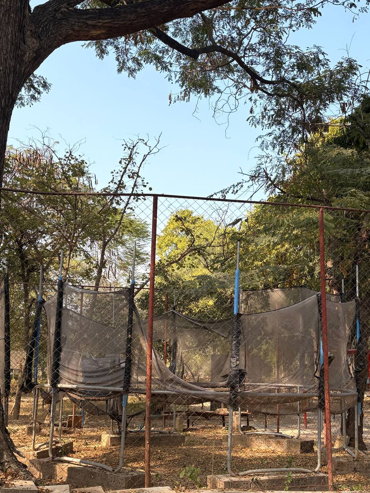
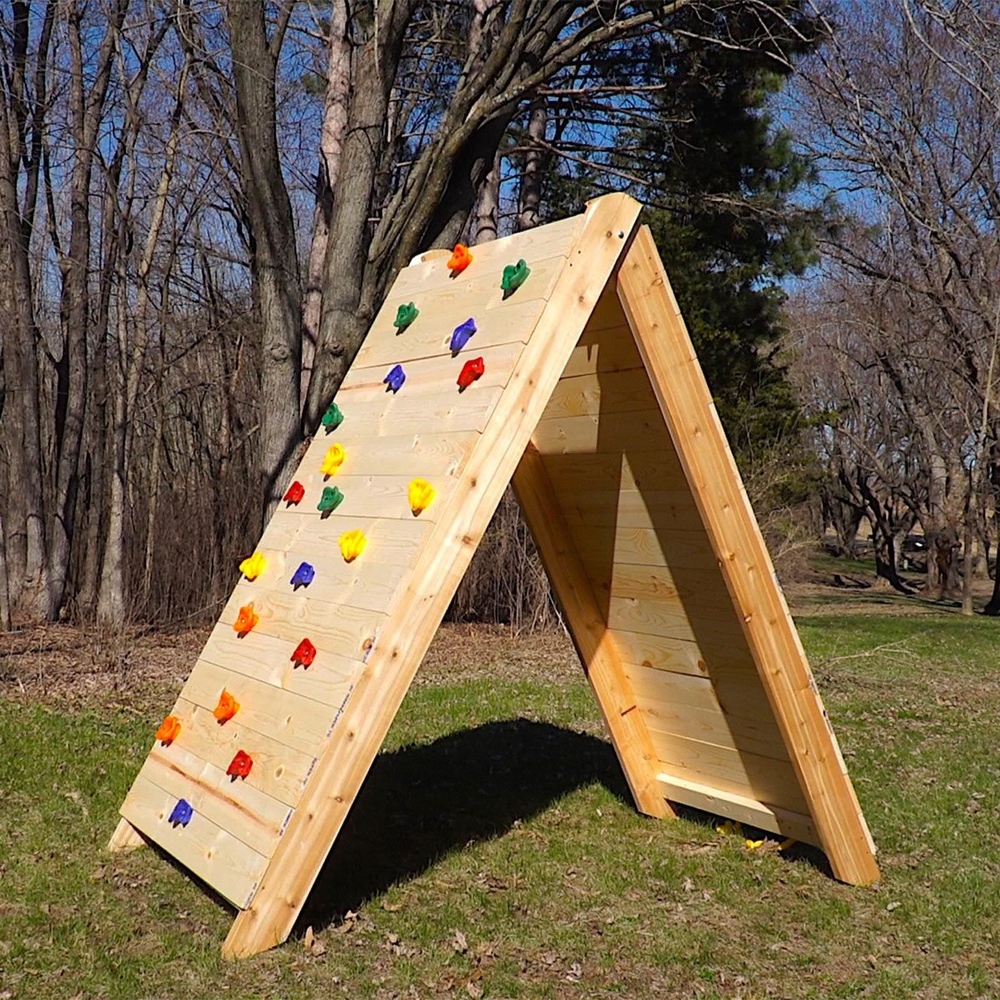
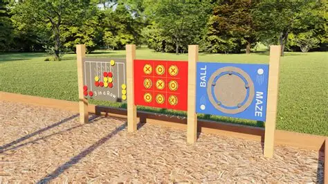

Playground Equipment Analysis & Proposals
Explore existing equipment, proposed additions, safety considerations, and fun activities to revitalize our local park!

Monkey Bars
Description: Classic horizontal ladder for children and adults to swing across.
Advantages: Builds upper body strength, coordination, and confidence.
Disadvantages: Risk of falls without proper safety flooring; may be challenging for younger children.
Educational/Physical Benefits: Arm/shoulder strength, grip control, coordination, balance, self-confidence.
Safety Tips: Supervision required, regular inspection, cushioned flooring.

Spider Web Net Climber
Description: Circular rope-based climbing structure.
Advantages: Encourages teamwork, imaginative play, core strength.
Disadvantages: Needs strong cables and shock-absorbing surface; rope maintenance needed.
Educational/Physical Benefits: Problem-solving, balance, coordination, teamwork, endurance.
Safety Tips: Check rope tension, use proper flooring, supervise.

Trampoline
Description: Bouncing platform for cardiovascular exercise.
Advantages: Fun, improves fitness, balance, and coordination.
Disadvantages: Risk of injury if overcrowded; needs supervision and weight limits.
Educational/Physical Benefits: Cardiovascular health, coordination, stress relief.
Safety Tips: Non-slip mat, weight limits, spring checks, adult supervision.

Proposed: Climbing Wall
Description: Vertical climbing structure with varying difficulty.
Advantages: Builds upper body strength, focus, and problem-solving skills.
Disadvantages: Requires professional installation, safety mats, supervision.
Educational/Physical Benefits: Coordination, confidence, problem-solving.
Safety Tips: Install cushioned flooring, supervise, inspect grips regularly.

Proposed: Rope Course
Description: Challenge course with rope bridges, swings, and balance beams.
Advantages: Fun, develops agility, teamwork, and problem-solving.
Disadvantages: Requires space and safety checks; weather sensitive.
Educational/Physical Benefits: Agility, coordination, teamwork, fitness.
Safety Tips: Supervision, harnesses, secure anchors.

Proposed: Interactive Panel
Description: Panels with games, learning activities, and sensory play.
Advantages: Educational, promotes social interaction, fun for all ages.
Disadvantages: Needs maintenance and weather protection.
Educational/Physical Benefits: Cognitive development, social skills, creativity.
Safety Tips: Secure installation, inspect regularly.
Playground Safety Tips
- Always supervise children during play.
- Check equipment regularly for wear or damage.
- Ensure soft flooring around climbing structures.
- Encourage children to take turns and play fairly.
- Keep the area free from trash or obstacles.
Fun Activities & Games
Our playground can be a place for more than just equipment! Here are some ideas:
- Obstacle courses using the existing equipment.
- Team games like relay races or scavenger hunts.
- Fitness challenges for older children and teens.
- Storytelling and imaginative role play near climbing areas.
- Art activities such as sidewalk chalk drawings.
Parent Tips
- Set clear rules and safety boundaries for children.
- Encourage cooperation and teamwork in play.
- Use the equipment to teach basic fitness concepts.
- Promote social skills by organizing group games.
- Observe and support children's problem-solving abilities.
Fun Facts & Trivia
- The first modern playground was built in 1887 in Germany.
- Climbing activities improve both mental focus and physical strength.
- Interactive panels can enhance early learning and cognitive skills.
- Trampolines originated in the 1930s as training equipment for astronauts.
- Rope courses are used worldwide for team-building exercises.
Testimonials & Quotes
"The playground is the heart of our community. Kids learn, laugh, and grow here every day!" - Local Resident
"I love watching my child challenge themselves on the climbing wall safely." - Parent
"Interactive play is just as important as reading or math in early development." - Parent